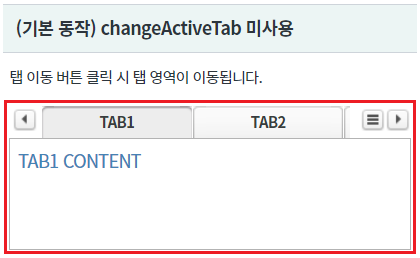
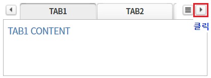
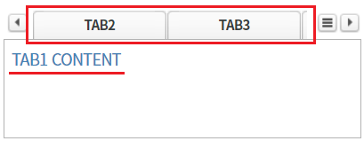
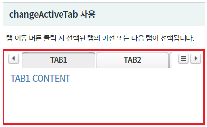
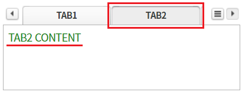
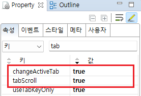
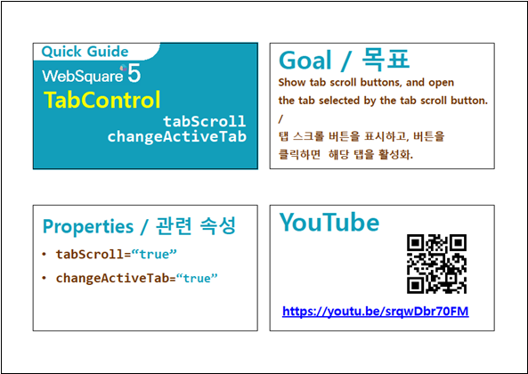

[TabControl] 탭의 이동 버튼의 기능 설정하기
1개요
TabControl의 속성 changeActiveTab 예제입니다. 속성 changeActiveTab은 속성 tabScroll이 "true"로 설정되어야 동작됩니다. changeActiveTab은 탭의 좌우 이동 버튼의 부가 기능을 제공합니다. 설정별 동작은 아래와 같습니다. (기본) "false" : 탭이 탭 영역을 초과한 경우 영역을 좌우로 이동합니다. "true" : 선택된 탭의 이전,이후 탭이 선택됩니다.
2구현된 기능
(기본 동작) changeActiveTab 미사용
changeActiveTab 사용
3예제 테스트 방법
각 영역의 TabControl의 탭 영역의 이동 기능 버튼을 클릭하여 동작을 비교합니다.
3.1(기본 동작) changeActiveTab 미사용
- STEP1. 초기 상태를 확인합니다.
영역 [(기본 동작) changeActiveTab 미사용]의 TabControl의 탭 영역에 출력되지 않은 탭이 있고, 첫 번째 탭 "TAB1"이 선택되어 있습니다.
[브라우저(Chrome) 실행 예시]

- STEP2. 탭 영역의 오른쪽 이동 버튼을 클릭합니다.
[브라우저(Chrome) 실행 예시]

- STEP3. 실행 결과를 확인합니다.
탭 영역이 오른쪽으로 이동됩니다.
(기 선택된 탭 유지되고 탭 영역만 이동합니다.)
[브라우저(Chrome) 실행 예시]

3.2changeActiveTab 사용
- STEP1. 초기 상태를 확인합니다.
영역 [changeActiveTab 사용]의 TabControl의 탭 영역에 출력되지 않은 탭이 있고, 첫 번째 탭 "TAB1"이 선택되어 있습니다.
[브라우저(Chrome) 실행 예시]

- STEP2. 탭 영역의 오른쪽 이동 버튼을 클릭합니다.
[브라우저(Chrome) 실행 예시]

- STEP3. 실행 결과를 확인합니다.
두번째 탭 "TAB2"가 선택(활성화)됩니다.
(기 선택된 탭 "TAB1"의 다음 탭이 선택됩니다.)
[브라우저(Chrome) 실행 예시]

4구현 예시
4.1changeActiveTab 사용 설정하기
TabControl의 속성을 정의합니다.
[필수] tabScroll="true" //탭 영역에 탭들의 이동과 선택의 편의성을 제공하는 기능 사용 설정
[필수] changeActiveTab="true" //탭 이동 버튼을 클릭하면 다음(이전)탭이 선택(활성화)되도록 설정
그림 1.웹스퀘어5 SP5 스튜디오의 Property View(속성창) 예시

[소스 코드 예시]
<!-- tabControl 소스 본문 예시 --> <w2:tabControl tabScroll="true" changeActiveTab="true" id="tac_exam2"> <!-- 중략 --> </w2:tabControl>
5주요 API
tabScroll
changeActiveTab
6참고 문서
[웹스퀘어5 SP5 개발 가이드] TabControl
링크 : https://docs1.inswave.com/sp5_user_guide/2059d4ce88b2fc16#0eeccc9d7fde2d33
[웹스퀘어5 SP5 개발 가이드] TabControl - 탭 스크롤 버튼을 통한 탭 활성화 (changeActiveTab="true")
링크 : https://docs1.inswave.com/sp5_user_guide/2059d4ce88b2fc16#ce554f03efe4ab6b
7참고 동영상
TabControl - 탭 스크롤 버튼을 통한 탭 활성화 (changeActiveTab="true")
링크 : https://youtu.be/srqwDbr70FM
